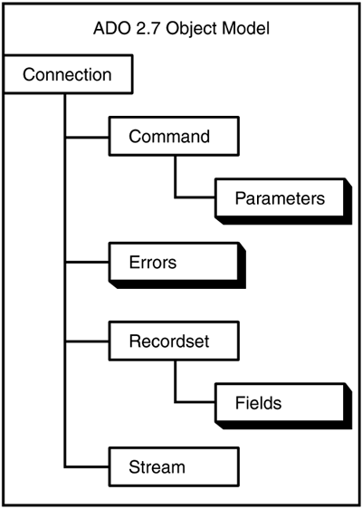

Note
With ADO.NET, you use Namespaces and classes rather than references and object models. Although this takes some getting used to, it isn't too bad after a while. |
That's right, object models, plural. Unlike DAO, which consists of one object model, ADO has several separate object models.
Note
With ADO.NET, you use Namespaces and classes rather than references and object models. Although this takes some getting used to, it isn't too bad after a while. |
ADO's object models work together to give you the objects and collections that are necessary to work with your data. A couple of the object models consist of the following:
ActiveX Data Objects 2.7 (ADODB) allows you to create and work with recordsets, as well as perform error handling.
ADO Extensions 2.7 for DDL and Security (ADOX) is the data definition language, allowing you to work with and modify the database schema. Security objects are also included in this object model.
Although these are separate object models and will be explained as such, you will also use them cohesively. For instance, to modify the table's structure, you need to get to the Tables collection located off the Catalog object in the ADOX library; however, this Catalog will have its ActiveConnection property set to the Connection object (ADODB). Take a look at what makes up the individual object models.
The ActiveX Data Objects object model (see Figure A.1) consists of the following:
Connection object. Equivalent to the Database object in DAO, this is where most of your work with ADO begins. All the objects and collections that are mentioned after this come from the Connection object.
Errors collection/Error object. Identical to the DAO errors collection and error object, this allows developers to manage error handling.
Command object. This allows you to run a query against a database and return records in a Recordset object, to manipulate a database's structure, and to execute a bulk operation. A collection of parameters is used with the Command object.
Recordset object. Similar to the DAO Recordset object, you can open the Recordset objects as read-only or dynamic. Each Recordset object also has a Fields collection.
Stream object. This object allows you to read in special tree-structured hierarchies, such as e-mail messages or file systems. You can even point the object to an URL, provided the system has set it up in a consistent manner. This is another way that ADO allows developers to read outside data, such as from other applications or over the Internet. You could not do this easily with DAO.

Most of the work is done in the ADODB module when you use ADO. Whenever you use recordsets, this is also the object model to use.